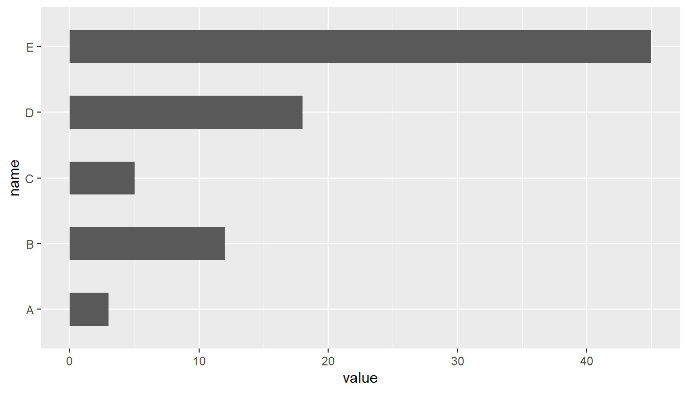

Capítulo 1 Medidas de asimetría
Podemos decir que la asimetría indica cuánto se desvía nuestra distribución subyacente de la distribución normal, ya que la distribución normal tiene asimetría 0. Generalmente, tenemos tres tipos de asimetría.
Desviación simétrica: cuando la asimetría es cercana a 0 y la media es casi la misma que la mediana
Desviación negativa: cuando la cola izquierda del histograma de la distribución es más larga y la mayoría de las observaciones se concentran en la cola derecha. En este caso, también podemos utilizar el término “sesgado a la izquierda” o “cola izquierda.” y la mediana es mayor que la media.
Desviación positiva: cuando la cola derecha del histograma de la distribución es más larga y la mayoría de las observaciones se concentran en la cola izquierda. En este caso, también podemos usar el término “sesgado a la derecha” o “cola derecha.” y la mediana es menor que la media.

Medidas de asimetría
- Índice de simetría de Pearson:
\[ f_1=\frac{\overline{x}-Mo}{\sigma} \]
- Índice de simetría de Fisher:
\[ f_2=\frac{\sum_{i=1}^{n}\left( x_i-\overline{x}\right)^3}{n\sigma^3} \]
* Simétrico : valores entre -0,5 y 0,5
* Datos asimétricos moderados : valores entre -1 y -0,5 o entre 0,5 y 1
* Datos muy sesgados : valores menores que -1 o mayores que 1Si la distribución es simétrica, ambos índices son iguales a 0; si es asimétrica a la derecha, ambos son positivos; y si es asimétrica a la izquierda, ambos índices son negativos.
## [1] 0.5059805

## [1] 1.216579
## [1] -1.340429| Clase | \(Y_i\) | \(f_i\) | \(Y_i*f_i\) |
|---|---|---|---|
| \([5,10)\) | 7.5 | 2 | 7.5 |
| \([10,15)\) | 12.5 | 3 | 25 |
| \([15,20)\) | 4 | 87.5 | |
| \([20,25)\) | 22.5 | 7 | 157.5 |
| \([25,30]\) | 27.5 | 10 | 275 |
| \([30,35]\) | 8 | 195 | |
| \(\sum\) |